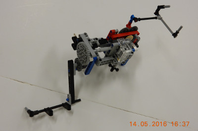

When designing our base robot, we establish criteria at the outset, such as desired footprint, height, balance, drive train, sensors to be used, user interface, etc. to arrive at a working prototype. We also strive to design and build a base robot which is robust and which features a frame around the chassis to provide structural rigidity as well as means to square up against walls and mission models. Before creating a prototype base robot, we prepare some high level rudimentary drawings on a flip chart which we use to stimulate discussion amongst team members. Once the team settles on a high-level base robot design, we use LDD or ML CAD to create a 3D-drawing of the prototype. Doing so allows us to be as efficient as possible with regard to type and quantity of pieces used. Based on the final drawing, we construct our prototype base robot using LEGO pieces/elements. After creating a working prototype, we design attachments keeping in mind that these attachments need to be easy to install and remove, robust, and both passive and multi-purpose whenever possible. From testing the prototype base robot and the attachments, we make revisions to our work in order to combine and speed up missions and increase repeatability to achieve maximum efficiency. By the end of the season, our attachments will often be in their fifth or sixth iteration.

When first designing our robot we wanted to make sure that all the light/color sensors behaved similarly. Color sensors each return a small differences in readings because of variations in manufacturing. For example, if you were to place two different color sensors on the same black line, each would return different values for light intensity. Sometimes the difference may be significant. To make sure that all our light sensors had about the same reading we completely shielded ten color sensors to eliminate the variable of ambient light and recorded the reading for each of the color sensors on black, white, and green. We then found the four color sensors which have the closest reading to each other and used those four color sensors on the robot.
We have found the the green EV3 move blocks (Move Tank and Move Steering) are unreliable. Although they have a built in PID feature, they still do not move the robot in a straight line. To test this, we set a designated starting spot for the robot and then we ran it until it hit the wall on the other side of the table. We repeated this dozens of times and found that each time it would end up in a different spot on the other side of the table (up to one inch away from the previous run). Each time it would be up to one inch away from the previous run. Then, we made our own error-corrected move block (which you can read about in the programming section of this website). We conducted the same experiment using our block and found that there was much less error and the robot would consistently end up in the same position on the table.


Our base robot is very robust and compact with a frame for strength. We also have three light sensors, for maximum flexibility, with shielding from ambient light. The robot has sliders, which are steering neutral, and has narrow and hard wheels for more accuracy in both straight movements and turns. However, we sacrafice some speed due to our small diameter wheels which decrese the error associated with the drive motor rotation sensors. Our modular design, with use of Technic angular wheel, and attachment bay allow the robot driver to install and remove attachments quickly and accurately.
| Name of Attachment | Description | Picture |
|---|---|---|
| Factory Attachment | When the robot leaves base it triggers an elastic powered frame that lines up on the side of the building so we can later bring the black bars to base. It simultaneously retrieves the plastic bag and deposits the methane loop using the “A” motor. The second arm reliably drops the methane into the factory with the assistance of a guide funnel. On the other side of the attachment, we use a wedge to trigger the factory from the side, and our attachment includes a small frame is used to collect the toy plane once it falls out of the factory. Upon returning to base, the robot knocks down the building, collects the valuables and brings the frame with the building pieces to base. | |
| Compost Mission Attachment | It uses our robot’s “A” motor and a container to: collect the methane loops, compost, plastic bag, and turtle. It also delivers the engine into the car. It drives out to the compost machine, triggers it and leaves behind a container for the compost to fall into. After that, the robot drops the engine into the car. It then goes and aligns both the composts so they are facing North/South on the mat, and collects them. It then goes back to collect the container with the compost in it, and heads back to base, getting the turtle and plastic bag on its way. |  |
| Truck Attachment | It uses some passive and motor-driven components to: deposit the methane loop in the truck, drop the yellow bin on the east side of the track, drop the turtle, octopus, and chicken in the circle, and push the toy airplane back to base. It drops the methane into the truck passively, and pushes the truck along the track, and releases it using elastic power. When the truck hits the end of the track, it cannot go any further, and the arm falls back because the elastics are overpowered. Next it uses a one way latch to collect the airplane. On its way back to base, the animals, which are held on a trap door, fall into the circle when the trap door releases. |  |